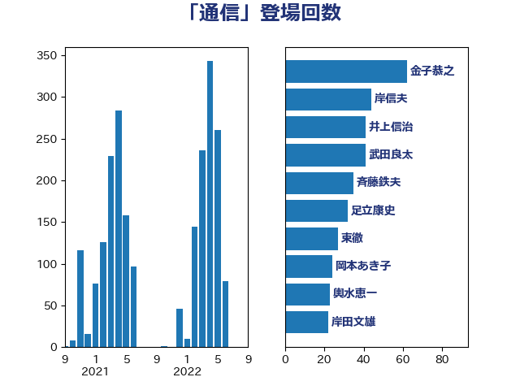

単語「通信」

| 金子恭之 | 自由民主党 | 62 回 |
| 岸信夫 | 自由民主党 | 44 回 |
| 井上信治 | 自由民主党 | 41 回 |
| 武田良太 | 自由民主党 | 41 回 |
| 斉藤鉄夫 | 公明党 | 35 回 |
| 足立康史 | 日本維新の会 | 32 回 |
| 東徹 | 日本維新の会 | 27 回 |
| 岡本あき子 | 立憲民主党 | 24 回 |
| 輿水恵一 | 公明党 | 23 回 |
| 岸田文雄 | 自由民主党 | 22 回 |
| 柳ヶ瀬裕文 | 日本維新の会 | 22 回 |
| 中西祐介 | 自由民主党 | 21 回 |
| 奥下剛光 | 日本維新の会 | 18 回 |
| 三浦信祐 | 公明党 | 17 回 |
| 泉田裕彦 | 自由民主党 | 17 回 |
| 萩生田光一 | 自由民主党 | 16 回 |
| 沢田良 | 日本維新の会 | 15 回 |
| 和田政宗 | 自由民主党 | 14 回 |
| 中司宏 | 日本維新の会 | 13 回 |
| 打越さく良 | 立憲民主党 | 13 回 |
| 阿部弘樹 | 日本維新の会 | 13 回 |
| 奥野総一郎 | 立憲民主党 | 12 回 |
| 田村智子 | 日本共産党 | 12 回 |
| 西岡秀子 | 国民民主党 | 12 回 |
| 浅田均 | 日本維新の会 | 11 回 |
| 湯原俊二 | 立憲民主党 | 11 回 |
| 礒崎哲史 | 国民民主党 | 11 回 |
| 古屋範子 | 公明党 | 10 回 |
| 末松信介 | 自由民主党 | 10 回 |
| 梶山弘志 | 自由民主党 | 10 回 |
| 伊藤岳 | 日本共産党 | 9 回 |
| 吉田統彦 | 立憲民主党 | 9 回 |
| 川崎ひでと | 自由民主党 | 9 回 |
| 浦野靖人 | 日本維新の会 | 9 回 |
| 國重徹 | 公明党 | 8 回 |
| 宮本岳志 | 日本共産党 | 8 回 |
| 小沢雅仁 | 立憲民主党 | 8 回 |
| 福重隆浩 | 公明党 | 8 回 |
| 芳賀道也 | 国民民主党 | 8 回 |
| 菅義偉 | 自由民主党 | 8 回 |
| 鈴木庸介 | 立憲民主党 | 8 回 |
| 井上哲士 | 日本共産党 | 7 回 |
| 前川清成 | 日本維新の会 | 7 回 |
| 守島正 | 日本維新の会 | 7 回 |
| 平将明 | 自由民主党 | 7 回 |
| 本村伸子 | 日本共産党 | 7 回 |
| 柴田巧 | 日本維新の会 | 7 回 |
| 鈴木宗男 | 日本維新の会 | 7 回 |
| 塩川鉄也 | 日本共産党 | 6 回 |
| 小林鷹之 | 自由民主党 | 6 回 |
| 山添拓 | 日本共産党 | 6 回 |
| 平井卓也 | 自由民主党 | 6 回 |
| 若宮健嗣 | 自由民主党 | 6 回 |
| 道下大樹 | 立憲民主党 | 6 回 |
| 鈴木俊一 | 自由民主党 | 6 回 |
| おおつき紅葉 | 立憲民主党 | 5 回 |
| 吉良よし子 | 日本共産党 | 5 回 |
| 城井崇 | 立憲民主党 | 5 回 |
| 大塚耕平 | 国民民主党 | 5 回 |
| 川田龍平 | 立憲民主党 | 5 回 |
| 後藤祐一 | 立憲民主党 | 5 回 |
| 新谷正義 | 自由民主党 | 5 回 |
| 木村次郎 | 自由民主党 | 5 回 |
| 柚木道義 | 立憲民主党 | 5 回 |
| 池下卓 | 日本維新の会 | 5 回 |
| 渡辺猛之 | 自由民主党 | 5 回 |
| 藤川政人 | 自由民主党 | 5 回 |
| 西村康稔 | 自由民主党 | 5 回 |
| 高木かおり | 日本維新の会 | 5 回 |
| 鬼木誠 | 立憲民主党 | 5 回 |
| 下条みつ | 立憲民主党 | 4 回 |
| 中谷真一 | 自由民主党 | 4 回 |
| 古川康 | 自由民主党 | 4 回 |
| 吉川元 | 立憲民主党 | 4 回 |
| 堀井巌 | 自由民主党 | 4 回 |
| 大家敏志 | 自由民主党 | 4 回 |
| 山田宏 | 自由民主党 | 4 回 |
| 岸真紀子 | 立憲民主党 | 4 回 |
| 平木大作 | 公明党 | 4 回 |
| 斎藤嘉隆 | 立憲民主党 | 4 回 |
| 横沢高徳 | 立憲民主党 | 4 回 |
| 石田昌宏 | 自由民主党 | 4 回 |
| 稲富修二 | 立憲民主党 | 4 回 |
| 藤井比早之 | 自由民主党 | 4 回 |
| 長友慎治 | 国民民主党 | 4 回 |
| 三浦靖 | 自由民主党 | 3 回 |
| 中曽根康隆 | 自由民主党 | 3 回 |
| 佐々木さやか | 公明党 | 3 回 |
| 吉川沙織 | 立憲民主党 | 3 回 |
| 吉田宣弘 | 公明党 | 3 回 |
| 大串博志 | 立憲民主党 | 3 回 |
| 安江伸夫 | 公明党 | 3 回 |
| 宮崎雅夫 | 自由民主党 | 3 回 |
| 山口那津男 | 公明党 | 3 回 |
| 山岡達丸 | 立憲民主党 | 3 回 |
| 山崎誠 | 立憲民主党 | 3 回 |
| 岩谷良平 | 日本維新の会 | 3 回 |
| 森山浩行 | 立憲民主党 | 3 回 |
| 櫻井周 | 立憲民主党 | 3 回 |
| 渡辺周 | 立憲民主党 | 3 回 |
| 片山さつき | 自由民主党 | 3 回 |
| 牧島かれん | 自由民主党 | 3 回 |
| 石井啓一 | 公明党 | 3 回 |
| 石井苗子 | 日本維新の会 | 3 回 |
| 石川博崇 | 公明党 | 3 回 |
| 福島みずほ | 社会民主党 | 3 回 |
| 美延映夫 | 日本維新の会 | 3 回 |
| 藤巻健太 | 日本維新の会 | 3 回 |
| 重徳和彦 | 立憲民主党 | 3 回 |
| 金城泰邦 | 公明党 | 3 回 |
| 阿部司 | 日本維新の会 | 3 回 |
| 高橋千鶴子 | 日本共産党 | 3 回 |
| 上田英俊 | 自由民主党 | 2 回 |
| 下野六太 | 公明党 | 2 回 |
| 中野洋昌 | 公明党 | 2 回 |
| 井林辰憲 | 自由民主党 | 2 回 |
| 伊藤孝恵 | 国民民主党 | 2 回 |
| 伊藤孝江 | 公明党 | 2 回 |
| 倉林明子 | 日本共産党 | 2 回 |
| 勝部賢志 | 立憲民主党 | 2 回 |
| 北側一雄 | 公明党 | 2 回 |
| 古賀之士 | 立憲民主党 | 2 回 |
| 古賀友一郎 | 自由民主党 | 2 回 |
| 和田有一朗 | 日本維新の会 | 2 回 |
| 堀場幸子 | 日本維新の会 | 2 回 |
| 大西英男 | 自由民主党 | 2 回 |
| 大野泰正 | 自由民主党 | 2 回 |
| 室井邦彦 | 日本維新の会 | 2 回 |
| 小森卓郎 | 自由民主党 | 2 回 |
| 小西洋之 | 立憲民主党 | 2 回 |
| 小里泰弘 | 自由民主党 | 2 回 |
| 山下芳生 | 日本共産党 | 2 回 |
| 山谷えり子 | 自由民主党 | 2 回 |
| 岬麻紀 | 日本維新の会 | 2 回 |
| 島尻安伊子 | 自由民主党 | 2 回 |
| 平林晃 | 公明党 | 2 回 |
| 新藤義孝 | 自由民主党 | 2 回 |
| 松沢成文 | 日本維新の会 | 2 回 |
| 森まさこ | 自由民主党 | 2 回 |
| 森田俊和 | 立憲民主党 | 2 回 |
| 永岡桂子 | 自由民主党 | 2 回 |
| 泉健太 | 立憲民主党 | 2 回 |
| 浅川義治 | 日本維新の会 | 2 回 |
| 浜田聡 | NHK党 | 2 回 |
| 清水貴之 | 日本維新の会 | 2 回 |
| 熊田裕通 | 自由民主党 | 2 回 |
| 牧原秀樹 | 自由民主党 | 2 回 |
| 田嶋要 | 立憲民主党 | 2 回 |
| 田村憲久 | 自由民主党 | 2 回 |
| 田村貴昭 | 日本共産党 | 2 回 |
| 盛山正仁 | 自由民主党 | 2 回 |
| 石井章 | 日本維新の会 | 2 回 |
| 石川大我 | 立憲民主党 | 2 回 |
| 磯崎仁彦 | 自由民主党 | 2 回 |
| 福山哲郎 | 立憲民主党 | 2 回 |
| 竹谷とし子 | 公明党 | 2 回 |
| 笠井亮 | 日本共産党 | 2 回 |
| 羽田次郎 | 立憲民主党 | 2 回 |
| 茂木敏充 | 自由民主党 | 2 回 |
| 藤木眞也 | 自由民主党 | 2 回 |
| 西銘恒三郎 | 自由民主党 | 2 回 |
| 野上浩太郎 | 自由民主党 | 2 回 |
| 野田国義 | 立憲民主党 | 2 回 |
| 金子俊平 | 自由民主党 | 2 回 |
| 青山周平 | 自由民主党 | 2 回 |
| 青柳仁士 | 日本維新の会 | 2 回 |
| 馬場伸幸 | 日本維新の会 | 2 回 |
| 高木啓 | 自由民主党 | 2 回 |
| 鰐淵洋子 | 公明党 | 2 回 |
| 麻生太郎 | 自由民主党 | 2 回 |
| 一谷勇一郎 | 日本維新の会 | 1 回 |
| 三木亨 | 自由民主党 | 1 回 |
| 上野通子 | 自由民主党 | 1 回 |
| 下村博文 | 自由民主党 | 1 回 |
| 世耕弘成 | 自由民主党 | 1 回 |
| 中山展宏 | 自由民主党 | 1 回 |
| 中川宏昌 | 公明党 | 1 回 |
| 中川郁子 | 自由民主党 | 1 回 |
| 中谷一馬 | 立憲民主党 | 1 回 |
| 丸川珠代 | 自由民主党 | 1 回 |
| 今井絵理子 | 自由民主党 | 1 回 |
| 伊波洋一 | 無所属 | 1 回 |
| 伊藤俊輔 | 立憲民主党 | 1 回 |
| 伊藤渉 | 公明党 | 1 回 |
| 佐藤正久 | 自由民主党 | 1 回 |
| 前原誠司 | 国民民主党 | 1 回 |
| 古川直季 | 自由民主党 | 1 回 |
| 吉川赳 | 無所属 | 1 回 |
| 嘉田由紀子 | 無所属 | 1 回 |
| 国光あやの | 自由民主党 | 1 回 |
| 坂井学 | 自由民主党 | 1 回 |
| 塩崎彰久 | 自由民主党 | 1 回 |
| 塩村あやか | 立憲民主党 | 1 回 |
| 塩田博昭 | 公明党 | 1 回 |
| 大島敦 | 立憲民主党 | 1 回 |
| 大石あきこ | れいわ新選組 | 1 回 |
| 太田房江 | 自由民主党 | 1 回 |
| 宮本周司 | 自由民主党 | 1 回 |
| 小宮山泰子 | 立憲民主党 | 1 回 |
| 小寺裕雄 | 自由民主党 | 1 回 |
| 小熊慎司 | 立憲民主党 | 1 回 |
| 小野寺五典 | 自由民主党 | 1 回 |
| 小野泰輔 | 日本維新の会 | 1 回 |
| 小野田紀美 | 自由民主党 | 1 回 |
| 山口俊一 | 自由民主党 | 1 回 |
| 山岸一生 | 立憲民主党 | 1 回 |
| 山本剛正 | 日本維新の会 | 1 回 |
| 新垣邦男 | 立憲民主党 | 1 回 |
| 有村治子 | 自由民主党 | 1 回 |
| 本田顕子 | 自由民主党 | 1 回 |
| 杉尾秀哉 | 立憲民主党 | 1 回 |
| 杉田水脈 | 自由民主党 | 1 回 |
| 松下新平 | 自由民主党 | 1 回 |
| 松原仁 | 立憲民主党 | 1 回 |
| 松山政司 | 自由民主党 | 1 回 |
| 松島みどり | 自由民主党 | 1 回 |
| 松本尚 | 自由民主党 | 1 回 |
| 枝野幸男 | 立憲民主党 | 1 回 |
| 柘植芳文 | 自由民主党 | 1 回 |
| 森本真治 | 立憲民主党 | 1 回 |
| 橘慶一郎 | 自由民主党 | 1 回 |
| 武村展英 | 自由民主党 | 1 回 |
| 水岡俊一 | 立憲民主党 | 1 回 |
| 池田佳隆 | 自由民主党 | 1 回 |
| 河野太郎 | 自由民主党 | 1 回 |
| 浜地雅一 | 公明党 | 1 回 |
| 浮島智子 | 公明党 | 1 回 |
| 滝沢求 | 自由民主党 | 1 回 |
| 片山大介 | 日本維新の会 | 1 回 |
| 玉木雄一郎 | 国民民主党 | 1 回 |
| 田中健 | 国民民主党 | 1 回 |
| 田畑裕明 | 自由民主党 | 1 回 |
| 矢倉克夫 | 公明党 | 1 回 |
| 石井浩郎 | 自由民主党 | 1 回 |
| 石原宏高 | 自由民主党 | 1 回 |
| 神田潤一 | 自由民主党 | 1 回 |
| 神谷裕 | 立憲民主党 | 1 回 |
| 福岡資麿 | 自由民主党 | 1 回 |
| 福島伸享 | 無所属 | 1 回 |
| 穀田恵二 | 日本共産党 | 1 回 |
| 空本誠喜 | 日本維新の会 | 1 回 |
| 竹内真二 | 公明党 | 1 回 |
| 篠原豪 | 立憲民主党 | 1 回 |
| 舩後靖彦 | れいわ新選組 | 1 回 |
| 若松謙維 | 公明党 | 1 回 |
| 菅家一郎 | 自由民主党 | 1 回 |
| 蓮舫 | 立憲民主党 | 1 回 |
| 西田実仁 | 公明党 | 1 回 |
| 谷田川元 | 立憲民主党 | 1 回 |
| 赤羽一嘉 | 公明党 | 1 回 |
| 鈴木敦 | 国民民主党 | 1 回 |
| 鈴木淳司 | 自由民主党 | 1 回 |
| 長坂康正 | 自由民主党 | 1 回 |
| 長浜博行 | 無所属 | 1 回 |
| 阿部知子 | 立憲民主党 | 1 回 |
| 青山大人 | 立憲民主党 | 1 回 |
| 青山繁晴 | 自由民主党 | 1 回 |
| 青木愛 | 立憲民主党 | 1 回 |
| 音喜多駿 | 日本維新の会 | 1 回 |
| 高橋はるみ | 自由民主党 | 1 回 |
| 高階恵美子 | 自由民主党 | 1 回 |